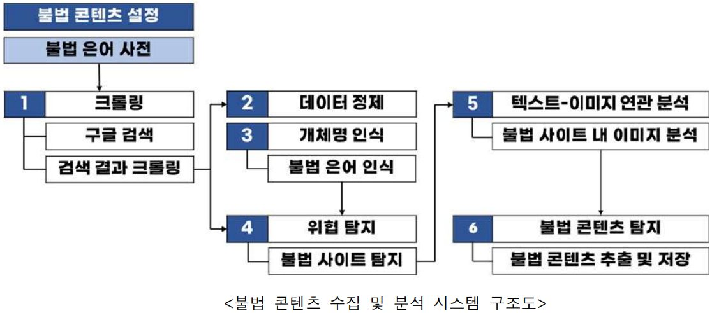

[Completed] 다크웹·SNS 등 비정형 OSINT(Open-source intelligence) 데이터의 효과적인 수집 및 분석을 위한 LLM 기반 자동화 시스템 개발
연구책임자 / 2025.04.01 ~ 2025.12.31 / 중소벤처기업부 (KRW 50 million)
다크웹·SNS 등 비정형 OSINT 데이터의 효과적인 수집 및 분석을 위한 LLM 기반 자동화 시스템 개발 (Development of an LLM-Based Automated System for Effective Collection and Analysis of Unstructured OSINT Data from the Dark Web and Social Media)
기간: 2025.04. ~ 2025.12.
Funding: 중소벤처기업부 (KRW 50 million)
본 연구는 다크웹, 블랙마켓, 익명 SNS 등에서 발생하는 범죄 및 사이버 위협을 신속하게 감지·분석하기 위해, 비정형 OSINT(Open-source Intelligence) 데이터의 자동화된 수집·분석 파이프라인을 LLM(Large Language Model) 기반으로 구축하고자 합니다. 특히 SNS·커뮤니티·메신저·블록체인 네트워크 등을 활용해 익명성과 확산성을 기반으로 빠르게 진화하는 온라인 불법 도박 콘텐츠를 중심 사례로 선정하여, ① 비정형 데이터 특성을 고려한 스크래핑·크롤링 모델 개발, ② 데이터 표준화·정제 자동화 및 전처리 파이프라인 구축, ③ 오픈소스 기반 LLM을 활용한 OSINT 데이터 식별·분류 모델 개발, ④ 개체명 인식(NER) 기반 불법 은어 사전 자동 확장, ⑤ 광고 게시물 내 이미지 분석을 통한 텍스트·계좌 정보 추출, ⑥ 가상계좌 등 위험 신호 실시간 경보 체계를 구현합니다. 본 시스템은 모듈형 구조로 설계되어 불법 은어 사전만 교체하면 총기·불법 성착취물 등 다른 유형의 불법 콘텐츠 탐지로 확장 가능하며, 기존 수동·패턴 기반 탐지 방식의 한계를 극복하여 수사기관 및 보안 전문가의 정밀하고 효율적인 분석·대응을 지원합니다.
English Summary:
This research develops an LLM-based automated system for the effective collection and analysis of unstructured Open-source Intelligence (OSINT) data from the dark web, black markets, and anonymous social media platforms. Using on line illegal gambling content as a primary case study, the system implements ① scraping and crawling models tailored to unstructured data characteristics, ② automated data standardization and preprocessing pipelines, ③ open-source LLM-based OSINT data identification and classification models, ④ Named Entity Recognition (NER)-based automatic expansion of illicit slang dictionaries, ⑤ image analysis for extracting embedded text and account information from advertisement posts, and ⑥ a real-time alert mechanism for risk signals such as virtual account detection. The system is designed with a modular architecture, enabling extension to other illegal content domains by simply replacing the domain-specific slang dictionary. By overcoming the limitations of existing manual and pattern-based detection methods, this research strengthens crime prevention and cybersecurity response capabilities, supporting law enforcement and security professionals in conducting more precise and efficient threat analysis.
